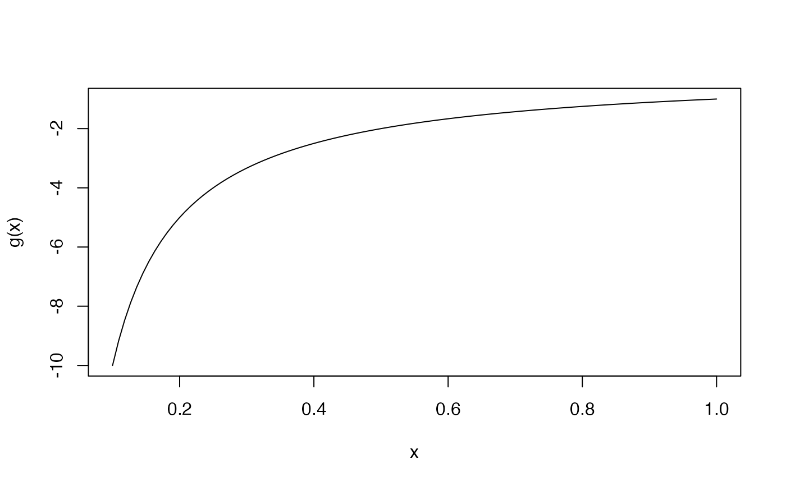
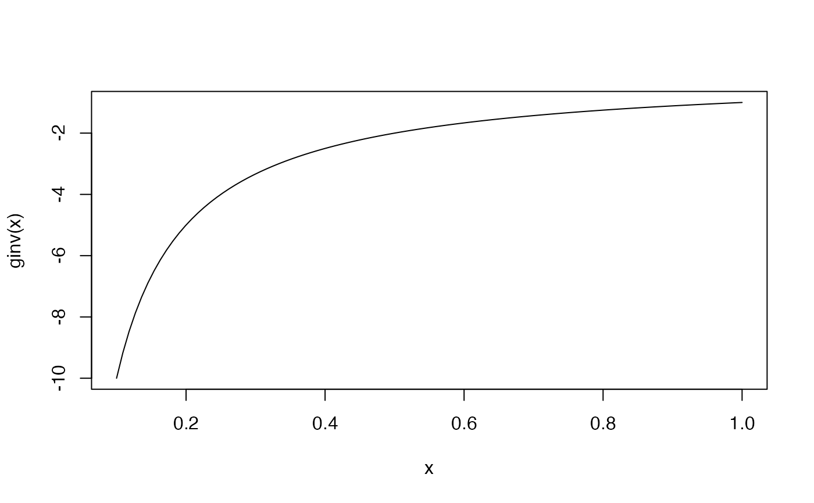

NegInv_link object provides a way to implement negative inverse link function that
maxlogL needs to perform estimation. See documentation for
maxlogL for further information on parameter estimation and implementation
of link objects.
NegInv_link()
A list with negative inverse link function, its inverse and its name.
logit_link is part of a family of generic functions with no input arguments that
defines and returns a list with details of the link function:
name: a character string with the name of the link function.
g: implementation of the link function as a generic function in R.
g_inv: implementation of the inverse link function as a generic function
in R.
There is a way to add new mapping functions. The user must specify the details aforesaid.
Other link functions: log_link,
logit_link
# Estimation of rate parameter in exponential distribution T <- rexp(n = 1000, rate = 3) lambda <- maxlogL(x = T, dist = "dexp", start = 5, link = list(over = "rate", fun = "NegInv_link")) summary(lambda)#> --------------------------------------------------------------- #> Optimization routine: nlminb #> Standard Error calculation: Hessian from optim #> --------------------------------------------------------------- #> AIC BIC #> -138.3141 -140.3141 #> --------------------------------------------------------------- #> Estimate Std. Error #> rate 2.9158 0.0922 #> -----#> Error in lambda$outputs$StdE <<- 0.0922: objeto 'lambda' no encontrado#> [1] "NegInv"